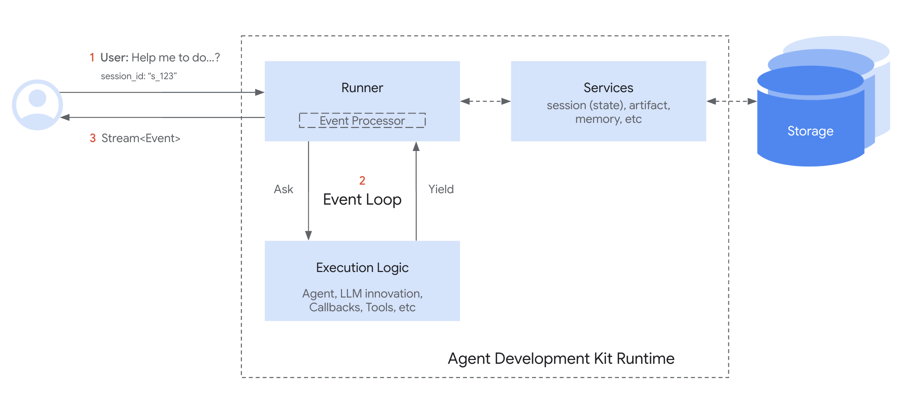

运行时系统
什么是运行时？
ADK Runtime 是支撑智能体应用在用户交互过程中运行的核心引擎。这个系统负责调度您定义的智能体、工具和回调函数，响应用户输入来协调执行流程，管理信息流转、状态变更以及与外部服务（如大模型或存储系统）的交互。
您可以将 Runtime 视为智能体应用的"发动机"。您负责定义各个组件（智能体、工具），而 Runtime 则处理它们之间的协作运行机制以满足用户请求。
核心概念：事件循环
ADK Runtime 的核心运行机制是事件循环。这个循环在 Runner 组件与您定义的"执行逻辑"（包括智能体、大模型调用、回调和工具）之间建立双向通信通道。

简单来说：
Runner接收用户查询后，请求主Agent开始处理Agent（及其关联逻辑）持续运行直到需要报告结果（如生成响应、调用工具请求或状态变更）——此时会产出一个EventRunner接收该Event后，处理相关操作（如通过Services保存状态变更），并将事件转发（例如到用户界面）- 只有当
Runner完成事件处理后，Agent的逻辑才会从暂停处恢复执行，此时可能已观察到 Runner 提交的变更效果 - 该循环持续进行，直到智能体对当前用户查询不再产出新事件
这种事件驱动的循环机制是 ADK 执行智能体代码的基础模式。
核心机制：事件循环详解
事件循环定义了 Runner 与自定义代码（智能体、工具、回调，在设计文档中统称为"执行逻辑"或"逻辑组件"）之间的交互范式，明确划分了职责边界：
Runner 的角色（协调中枢）
Runner 作为单次用户调用的中央协调器，在循环中承担以下职责：
- 初始化：接收终端用户查询（
new_message），通常通过SessionService将其追加到会话历史 - 启动：调用主智能体的执行方法（如
agent_to_run.run_async(...)）启动事件生成流程 - 接收与处理：等待智能体逻辑
yield产出Event。收到事件后立即处理：- 使用配置的
Services（SessionService、ArtifactService、MemoryService）提交event.actions中的变更（如state_delta、artifact_delta） - 执行其他内部簿记操作
- 使用配置的
- 向上传递：将处理完成的事件转发（如传递给调用应用或界面渲染）
- 迭代：通知智能体逻辑已完成当前事件处理，允许其恢复执行并产出下一个事件
Runner 循环概念示意：
# Simplified view of Runner's main loop logic
def run(new_query, ...) -> Generator[Event]:
# 1. Append new_query to session event history (via SessionService)
session_service.append_event(session, Event(author='user', content=new_query))
# 2. Kick off event loop by calling the agent
agent_event_generator = agent_to_run.run_async(context)
async for event in agent_event_generator:
# 3. Process the generated event and commit changes
session_service.append_event(session, event) # Commits state/artifact deltas etc.
# memory_service.update_memory(...) # If applicable
# artifact_service might have already been called via context during agent run
# 4. Yield event for upstream processing (e.g., UI rendering)
yield event
# Runner implicitly signals agent generator can continue after yielding
执行逻辑的角色（智能体、工具、回调）
智能体、工具和回调中的代码负责实际计算和决策制定，其与循环的交互包括：
- 执行：基于当前
InvocationContext（包括恢复执行时的会话状态）运行逻辑 - 产出：当需要通信时（发送消息、调用工具、报告状态变更），构建包含相关内容和操作的
Event，然后通过yield将事件传回Runner - 暂停：关键的是，智能体逻辑在
yield语句后立即暂停，等待Runner完成步骤3（处理与提交） - 恢复：只有当
Runner处理完产出的事件后，智能体逻辑才从yield后的语句继续执行 - 观察更新状态：恢复后，智能体逻辑可以可靠访问反映先前产出事件所提交变更的会话状态（
ctx.session.state）
执行逻辑概念示意：
# Simplified view of logic inside Agent.run_async, callbacks, or tools
# ... previous code runs based on current state ...
# 1. Determine a change or output is needed, construct the event
# Example: Updating state
update_data = {'field_1': 'value_2'}
event_with_state_change = Event(
author=self.name,
actions=EventActions(state_delta=update_data),
content=types.Content(parts=[types.Part(text="State updated.")])
# ... other event fields ...
)
# 2. Yield the event to the Runner for processing & commit
yield event_with_state_change
# <<<<<<<<<<<< EXECUTION PAUSES HERE >>>>>>>>>>>>
# <<<<<<<<<<<< RUNNER PROCESSES & COMMITS THE EVENT >>>>>>>>>>>>
# 3. Resume execution ONLY after Runner is done processing the above event.
# Now, the state committed by the Runner is reliably reflected.
# Subsequent code can safely assume the change from the yielded event happened.
val = ctx.session.state['field_1']
# here `val` is guaranteed to be "value_2" (assuming Runner committed successfully)
print(f"Resumed execution. Value of field_1 is now: {val}")
# ... subsequent code continues ...
# Maybe yield another event later...
这种由 Event 对象协调的、Runner 与执行逻辑之间的产出/暂停/恢复协作循环，构成了 ADK Runtime 的核心架构。
运行时关键组件
ADK Runtime 中多个组件协同工作来执行智能体调用，理解它们的角色有助于厘清事件循环的运作机制：
-
Runner- 角色：单次用户查询（
run_async）的主入口和协调器 - 功能：管理整体事件循环，接收执行逻辑产出的事件，协调服务处理并提交事件操作（状态/产物变更），将处理完成的事件向上传递（如到UI）。本质上是基于产出事件驱动逐轮对话（定义于
google.adk.runners.runner.py）
- 角色：单次用户查询（
-
执行逻辑组件
- 角色：包含自定义代码和智能体核心能力的部分
- 组成：
Agent（BaseAgent、LlmAgent等）：处理信息并决策行动的主逻辑单元，实现产出事件的_run_async_impl方法Tools（BaseTool、FunctionTool、AgentTool等）：智能体（通常通过LlmAgent）与外界交互或执行特定任务的外部功能，执行后返回结果并包装为事件Callbacks（函数）：附加到智能体的用户定义函数（如before_agent_callback、after_model_callback），挂钩到执行流特定节点，可能修改行为或状态，其效果通过事件捕获- 功能：执行实际思考、计算或外部交互，通过产出
Event对象来通信结果或需求，并暂停直到 Runner 处理完成
-
Event- 角色：
Runner与执行逻辑间传递的消息载体 - 功能：表示原子事件（用户输入、智能体文本、工具调用/结果、状态变更请求、控制信号），既携带事件内容也包含预期副作用（
actions如state_delta）（定义于google.adk.events.event.py）
- 角色：
-
Services- 角色：管理持久化或共享资源的后端组件，主要由
Runner在事件处理时使用 - 组成：
SessionService（BaseSessionService、InMemorySessionService等）：管理Session对象，包括保存/加载、对会话状态应用state_delta、将事件追加到event historyArtifactService（BaseArtifactService、InMemoryArtifactService、GcsArtifactService等）：管理二进制产物数据的存储检索。虽然save_artifact通过上下文在执行逻辑中调用，但事件中的artifact_delta向Runner/SessionService确认操作MemoryService（BaseMemoryService等）：（可选）管理用户跨会话的长期语义记忆- 功能：提供持久化层。
Runner与之交互以确保event.actions信号的变化在执行逻辑恢复前可靠存储
- 角色：管理持久化或共享资源的后端组件，主要由
-
Session- 角色：存储用户与应用间特定对话状态与历史的数据容器
- 功能：存储当前
state字典、所有历史events（event history）列表及相关产物引用，是由SessionService管理的主要交互记录（定义于google.adk.sessions.session.py）
-
Invocation- 角色：表示从
Runner接收单次用户查询到智能体逻辑停止产出事件期间所有发生的概念术语 - 功能：一次调用可能涉及多次智能体运行（如使用智能体转移或
AgentTool）、多次大模型调用、工具执行和回调执行，全部通过InvocationContext中的单个invocation_id关联
- 角色：表示从
这些参与者通过事件循环持续交互来处理用户请求。
运作机制：简化调用流程
以下展示涉及大模型智能体调用工具的典型用户查询简化流程：

逐步解析
- 用户输入：用户发送查询（如"法国首都是哪里？"）
- Runner启动：
Runner.run_async开始运行，与SessionService交互加载相关Session，将用户查询作为首个Event加入会话历史，准备InvocationContext（ctx） - 智能体执行：
Runner调用指定根智能体（如LlmAgent）的agent.run_async(ctx) - 大模型调用（示例）：
Agent_Llm判断需要信息（可能通过调用工具），准备LLM请求。假设大模型决定调用MyTool - 产出函数调用事件：
Agent_Llm接收大模型的FunctionCall响应，包装为Event(author='Agent_Llm', content=Content(parts=[Part(function_call=...)]))后yield该事件 - 智能体暂停：
Agent_Llm在yield后立即暂停执行 - Runner处理：
Runner接收函数调用事件，传递给SessionService记录历史，Runner将事件向上传递给User（或应用） - 智能体恢复：
Runner通知事件处理完成，Agent_Llm恢复执行 - 工具执行：
Agent_Llm内部流程继续执行请求的MyTool，调用tool.run_async(...) - 工具返回结果：
MyTool执行并返回结果（如{'result': 'Paris'}） - 产出函数响应事件：智能体（
Agent_Llm）将工具结果包装为包含FunctionResponse（如Event(author='Agent_Llm', content=Content(role='user', parts=[Part(function_response=...)]))）的Event。若工具修改状态（state_delta）或保存产物（artifact_delta），事件可能还包含actions。智能体yield该事件 - 智能体暂停：
Agent_Llm再次暂停 - Runner处理：
Runner接收函数响应事件，传递给SessionService应用state_delta/artifact_delta并加入历史，Runner向上传递事件 - 智能体恢复：
Agent_Llm恢复执行，此时工具结果和状态变更已确认提交 - 最终大模型调用（示例）：
Agent_Llm将工具结果返回LLM生成自然语言响应 - 产出最终文本事件：
Agent_Llm接收大模型的最终文本，包装为Event(author='Agent_Llm', content=Content(parts=[Part(text=...)]))后yield产出 - 智能体暂停：
Agent_Llm暂停 - Runner处理：
Runner接收最终文本事件，传递给SessionService记录历史，向上传递给User，通常标记为is_final_response() - 智能体恢复并结束：
Agent_Llm恢复，完成本次调用任务后其run_async生成器终止 - Runner完成：
Runner检测智能体生成器耗尽，结束本次调用的循环
这种产出/暂停/处理/恢复的循环机制确保状态变更被一致应用，且执行逻辑在产出事件后总是基于最新提交的状态运行。
重要运行时行为
理解 ADK Runtime 处理状态、流式输出和异步操作的关键特性，对于构建稳定高效的智能体至关重要。
状态更新与提交时机
-
规则：当代码（在智能体、工具或回调中）修改会话状态（如
context.state['my_key'] = 'new_value'）时，变更最初记录在当前InvocationContext的本地副本中。只有当中包含对应state_delta的Event被代码yield产出且经Runner处理后，变更才保证被持久化（由SessionService保存） -
影响：从
yield恢复后运行的代码可以可靠假定产出事件中的状态变更已提交
# Inside agent logic (conceptual)
# 1. Modify state
ctx.session.state['status'] = 'processing'
event1 = Event(..., actions=EventActions(state_delta={'status': 'processing'}))
# 2. Yield event with the delta
yield event1
# --- PAUSE --- Runner processes event1, SessionService commits 'status' = 'processing' ---
# 3. Resume execution
# Now it's safe to rely on the committed state
current_status = ctx.session.state['status'] # Guaranteed to be 'processing'
print(f"Status after resuming: {current_status}")
会话状态的"脏读"
- 定义：虽然提交发生在产出之后，但在同次调用内后续运行（且状态变更事件尚未实际产出和处理前）的代码常可观察到本地未提交的变更，这种现象称为"脏读"
- 示例：
# Code in before_agent_callback
callback_context.state['field_1'] = 'value_1'
# State is locally set to 'value_1', but not yet committed by Runner
# ... agent runs ...
# Code in a tool called later *within the same invocation*
# Readable (dirty read), but 'value_1' isn't guaranteed persistent yet.
val = tool_context.state['field_1'] # 'val' will likely be 'value_1' here
print(f"Dirty read value in tool: {val}")
# Assume the event carrying the state_delta={'field_1': 'value_1'}
# is yielded *after* this tool runs and is processed by the Runner.
- 影响：
- 优势：允许复杂步骤中不同逻辑部分（如多次回调或工具调用）无需等待完整产出/提交周期即可通过状态协调
- 注意：关键逻辑过度依赖脏读存在风险。若调用在携带
state_delta的事件被Runner处理前失败，未提交的变更将丢失。关键状态转换应确保关联事件能被成功处理
流式与非流式输出（partial=True）
这主要涉及大模型响应处理方式，特别是使用流式生成API时：
- 流式：大模型逐令牌或分块生成响应
- 框架（通常在
BaseLlmFlow内）为单个概念响应产出多个Event对象，多数事件带partial=True标记 Runner收到含partial=True标记的事件时通常立即向上传递（供UI显示）但跳过处理其actions（如state_delta）- 最终框架会为该响应产出标记为非分块（
partial=False或通过turn_complete=True隐式标记）的结束事件 Runner仅完整处理该结束事件，提交关联的state_delta或artifact_delta- 非流式：大模型一次性生成完整响应。框架产出单个非分块标记事件，
Runner完整处理 - 意义：确保基于大模型完整响应原子性应用状态变更，同时允许UI在生成过程中渐进显示文本
异步优先（run_async）
- 核心设计：ADK Runtime 基于 Python 的
asyncio库构建，高效处理并发操作（如等待大模型响应或工具执行）而不阻塞 - 主入口：
Runner.run_async是执行智能体调用的主要方法，所有核心可运行组件（智能体、特定流程）内部均使用async def方法 - 同步便捷接口（
run）：同步方法Runner.run主要为便捷性存在（如简单脚本或测试环境），内部通常只是调用Runner.run_async并管理异步事件循环执行 - 开发体验：建议应用逻辑（如使用 ADK 的 web 服务器）采用
asyncio设计 - 同步回调/工具：框架可无缝处理
async def和常规def函数形式的工具或回调。长时间运行的同步工具或回调（特别是阻塞I/O操作）可能阻塞主asyncio事件循环。框架可能通过asyncio.to_thread等机制在独立线程池运行此类阻塞代码以避免影响其他异步任务。但CPU密集型同步代码仍会阻塞所在线程
理解这些行为有助于编写更健壮的 ADK 应用，并调试与状态一致性、流式更新和异步执行相关的问题。